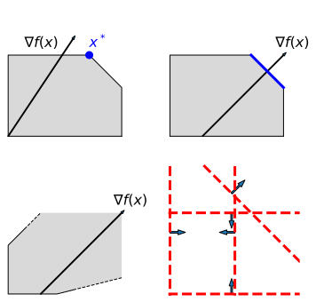
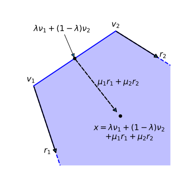

Fundamental Theorem of Linear Programming
- Ian Hawke
- Giles Richardson
Fundamental theorem
Theorem: Let $P = \{ x \in \mathbb{R}^n \colon A x \le b \}$ be the feasible region of the linear program $\max \{ c x \colon x \in P \}$. If $P$ is non-empty, the linear program either admits an optimal solution $x^*$ corresponding to a vertex of $P$, or is unbounded.
Rephrase: a linear program has either
- no solutions ($P$ empty), or
- an unbounded solution (objective function "gets better" to infinity), or
- an optimal solution at a corner of $P$.
Cases
Strategy
Want to write $x \in P$ in terms of $v_i$, vertices of $P$. Then show any non-corner point cannot improve objective function.
Key result: Weyl-Minkowski theorem: \[ \begin{aligned} x & \in P & \implies && \exists \, \lambda_1, \dots \lambda_k & \ge 0 \\ \text{with} &&&& \sum_{i=i}^k \lambda_i & = 1 \\ \text{and} &&&& \exists \, \mu_1, \dots \mu_h & \ge 0 \\ \text{such that} &&&& x & = \sum_{i=1}^k \lambda_i v_i + \sum_{j=1}^h \mu_j r_j. \end{aligned} \]
Weyl-Minkowski
Convex combinations
Take $x_1, \dots x_k \in \mathbb{R}^n$. Convex combinations: \[ \begin{aligned} && y & = \sum_{i=1}^k \lambda_i x_i \\ \text{with} && \lambda_i & \ge 0 \\ \text{and} && \sum_{i=1}^k \lambda_i & = 1. \end{aligned} \]
- Convex combinations "fill in" between the $x_i$.
- In 1d get a line segment.
- In higher dimensions get a "triangle".

Vertices, faces, facets
- Vertex: a $v \in P$ that cannot be expressed as a convex combination of $x, y \in P$, with $x, y, v$ distinct.
- Face: any planar surface in the boundary of $P$.
- Facet: any $n-1$ dimensional face.
Conic combinations
Take $x_1, \dots x_h \in \mathbb{R}^n$. Conic combinations: \[ \begin{aligned} && y & = \sum_{j=1}^h \mu_j x_j \\ \text{with} && \mu_j & \ge 0. \end{aligned} \]
- Conic combinations "sweep out" between the $x_i$ and the origin.
- In 1d get a line.
- In higher dimensions get a "cone".
Rays
For $S \subseteq \mathbb{R}^n$, vector $r \in \mathbb{R}^n$ is a ray if \[ \begin{aligned} && x_0 + \mu r & \in S \\ && \forall x_0 & \in S \\ \text{and} && \forall \mu & \ge 0. \end{aligned} \]
- Start from any point in $S$. Move in the direction of $r$, and you remain in $S$.
- Extreme rays cannot be written as conic combinations of other rays.
- Extreme rays are roughly edges.
Weyl-Minkowski
Change LP variables to $(\lambda, \mu)$: \[ \max c x \longleftrightarrow \max \sum_{i=1}^k \lambda_i \left( c v_i \right) + \sum_{j=1}^h \mu_j \left( c r_j \right). \]
Constraints: \[ \begin{aligned} \lambda_1, \dots, \lambda_k, \mu_1, \dots, \mu_h & \ge 0, \\ \sum_{i=1}^k \lambda_i & = 1. \end{aligned} \]
Fundamental Theorem
\[ \max_{(\lambda, \mu)} \sum_{i=1}^k \lambda_i \left( c v_i \right) + \sum_{j=1}^h \mu_j \left( c r_j \right) \quad \text{s.t.} \quad \lambda, \mu \ge 0 \quad \sum_{i=1}^k \lambda_i = 1. \]Two cases:
- $(c r_j) > 0$ for some $j$. Increasing $\mu_j$ increases objective. Problem unbounded.
-
$(c r_j) \le 0$ for all $j$.
- Optimal at $\mu = 0$.
- Hence optimal $x^*$ when $c x^* = \sum_{i=1}^k \lambda_i \left( c v_i \right)$.
- Enumerate vertices: \[ c x^* = \max_{i} \left( c v_i \right). \]
Summary
- Linear programs in canonical form can be interpreted geometrically.
-
The fundamental theorem shows that linear programs have
- no solutions (feasible region is empty), or
- are unbounded (objective function can be improved to infinity), or
- the optimal solution is at a vertex of the feasible region.